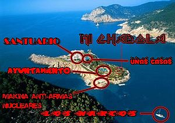

De: La Frikipedia, la enciclopedia extremadamente seria.
De: La Frikipedia, la enciclopedia extremadamente seria. De: La Frikipedia, la enciclopedia extremadamente seria.
| De la serie Países del planeta tierra: | |||||
| apatolandia | |||||
|---|---|---|---|---|---|
| |||||
| Lema: acti-apatízate™ | |||||
| Himno: un pato se balanceaba por la tela de una araña como veia que no se caia fueron a llamar a otro pato...
| |||||
| 
| |||||
| Capital | patadrid | ||||
| Mayor ciudad | pataldepeñas | ||||
| Lenguas oficiales | cuack-cuack | ||||
| Gobierno | patocracia | ||||
| patotudo | paton | ||||
| Área | por ahí | ||||
| Población | depende de la compra de ellos en los chinos | ||||
| Moneda | apatin | ||||
| Zona horaria | GTM 17-1-21-16 | ||||
| Dominio Internet | .pat | ||||
| Código telefónico | 17-16-21-1
| ||||
| allí no funcionan las armas nucleares | |||||
es un pais como muestra la imagen de arriba(la del mapa) es una isla no muy grande, pero es una de las grandes potencias junto a andorra
todo empezo en la guerra medica(entre gregory house y nick riviera,de los simpson)se dieron pa'l pelo, se pegaron... y entonces cogió house una escopeta, la esquivo el amarillo y ¡zasca!le dio al mar una bala y un volcan poto lava y, mientras, pasaban 69 patos por alli(todos de goma) la bala con la lava hizo una reaccion quimica que te cagas y se creo eso más extraño que Carmen de Mairena.
donde no esta:
bueno, mejor que te diga donde está:allí vive el sadam jusein ese

|
un pato se balanceaba por la tela de una araña como veia que no se caia fueron a llamar a otro pato |

|
| himno apatoliense |
Autor(es):